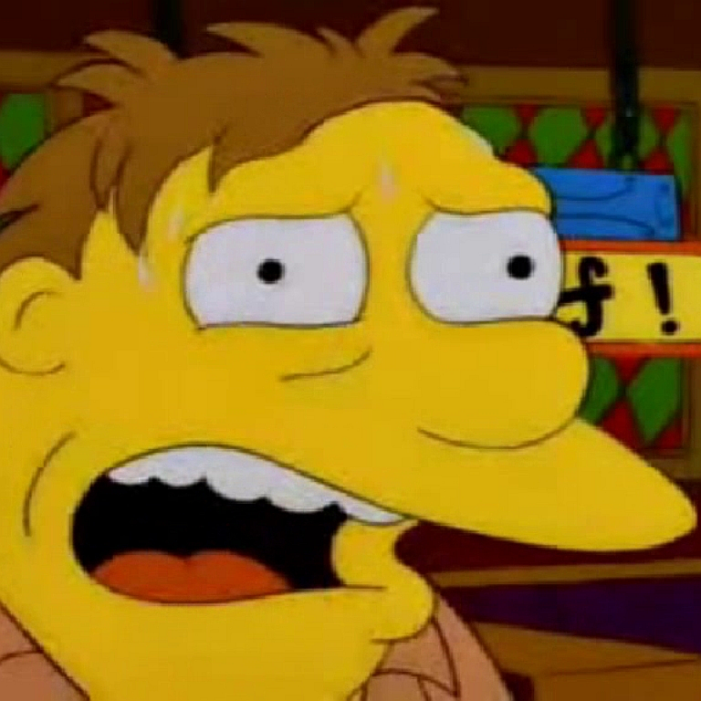
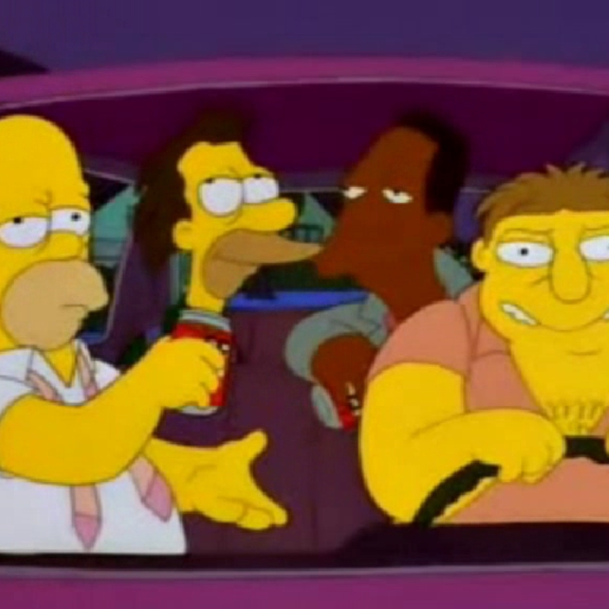
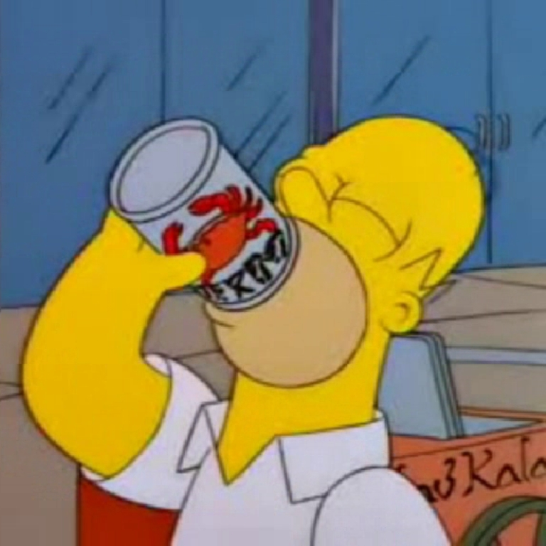
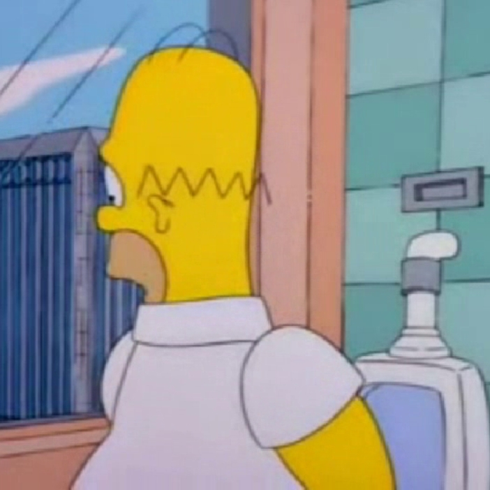
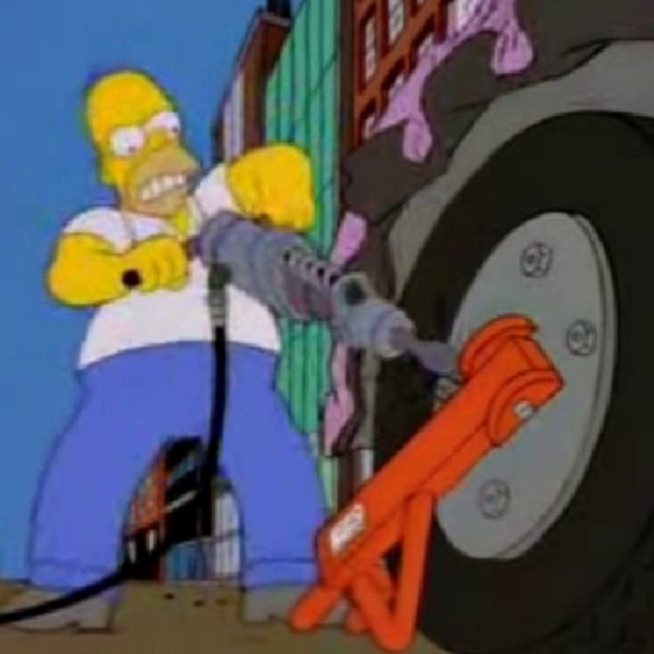
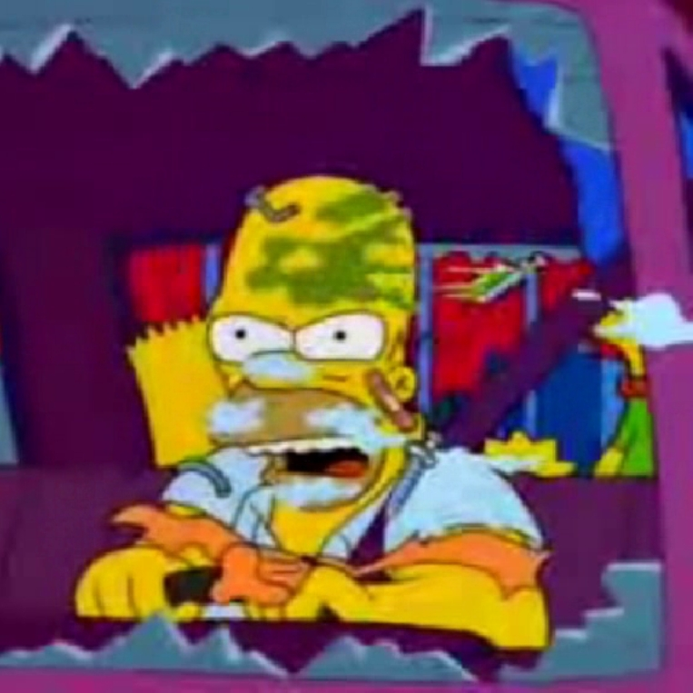

Originalmente The City of New York vs. Homer Simpson (llamado La ciudad de Nueva York vs. Homer Simpson en España y La ciudad de Nueva York contra Homero en Hispanoamérica) es el primer episodio de la novena temporada de la serie de televisión de dibujos animados Los Simpson y fue estrenado el 21 de septiembre de 1997 por Fox.
El guionista Ian Maxtone-Graham quería hacer un episodio en el que la familia Simpson viajara a Nueva York para recuperar su coche perdido. La canción «You're Checkin' In» que cantan en la secuencia del musical ganó varios premios en 1998. Debido a la importancia del World Trade Center en el argumento, el episodio fue retirado de las emisoras de Estados Unidos tras los atentados del 11 de septiembre de 2001, aunque después de unos años, volvió a la transmisión.
Homero y sus amigos llegan de la planta nuclear a la taberna de Moe para su rutina diaria. Moe les dice a cada uno que la policía informó que la mayoría de los accidentes de tránsito son causados por ellos asi que tendrán que elegir un conductor designado. Hacen un sorteo donde el que saque el huevo negro no beberá esa noche y Barney sale elegido. Justo ese día llega DuffMan a entregar un barril de cerveza a Barney ya que habia ganado un concurso, pero Barney lo rechaza muy a su pesar.
Luego, Homero le deja su coche a Barney para que los lleve a sus casas. Después de dejar a Lenny, Carl, y Homero en sus respectivas casas, Barney desaparece con el coche de Homero durante dos meses. Resulta que el coche de Homero ha terminado de alguna manera encima de la acera en el World Trade Center (WTC) de la ciudad de Nueva York. Los Simpsons se deciden entonces a realizar un viaje a esta ciudad para encontrar su coche, pese a las reticencias de Homero que cuando era joven tuvo una mala experiencia en ella.
Cuando llegan a Manhattan, deciden separarse. Homero va al World Trade Center y encuentra su auto con una gran cantidad de multas por mal estacionamiento y un cepo unido a la rueda. Debe esperar de 9:00 a 17:00 hasta que se presente un oficial de policía al que pudiera pagar y éste quitarle el cepo. Durante su espera le da hambre por lo que le compra carne a un vendedor en carrito. Después de beber varias latas de jugo de cangrejo tiene ganas de orinar, va hasta el baño de la torre sur y lo encuentra fuera de servicio.
Vuelve atrás y sube a la torre norte lo más rápido posible, donde finalmente consigue utilizar el baño. Pero cuando mira por la ventana descubre al oficial de policía al lado de su coche. Quien después de poner otra multa nueva en el auto, se retira. Homero ya nada puede hacer. Solo grita ¡Ouh! tan ruidosamente que el eco recorre a través de la ciudad entera mientras se ve un coche de policía en dirección contraria al World Trade Center y en el segundo eco aparece en el Empire State, donde se puede ver a Marge, Maggie y Bart en la terraza. Después de bajar corriendo de la torre norte, se encuentra con una multa de 250 dólares por no esperar. Frustrado y enojado, decide salir de la ciudad cueste lo que cueste para lo que sube en su coche dispuesto a forzando el cepo, aunque este destroza el guardabarros de su coche pero él continúa conduciendo causando un gran embotellamiento
Luego pasa por una obra en construcción donde hace distraer a un trabajador para quitarle su martillo hidráulico y usarlo contra el cepo. Finalmente logra deshacerse del cepo aunque daña gravemente el coche. Homero conduce lejos de los insultos (y disparos) de las personas presentes. Mientras tanto, Marge, Lisa y Bart las estan pasando de maravillas conociendo la ciudad. La familia visitó varias atracciones que incluyen la Estatua de la Libertad, Little Italy, Chinatown, Broadway (donde ven un musical sobre la clínica Betty Ford) y las oficinas de la Revista MAD (donde ven a su mascota Alfred E. Neuman). Al final del día, Lisa, Marge, Bart y Maggie toman un paseo en un coche de caballos a través de Central Park.
Homero conduce al lado del carruaje en su coche y pide que salten a bordo, pero lo rechazan. Así pues, Homero detiene el coche y ellos entran. Ya en el puente George Washington, Lisa pregunta si pueden volver el año próximo, a lo que Homero contesta que lo pensaría con expresión facial iracunda, mientras restos de basura de un camión que circula delante, con residuos patológicos, golpean su cara a través del parabrisas roto de su coche, dejándole el rostro con sangre y agujas desparramadas, mientras, la vista se aleja del coche dejando ver el puente y varios edificios de Manhattan, sonando la canción de New York, New York
El episodio fue escrito por Ian Maxtone-Graham, un antiguo residente en Nueva York, que había concebido la idea de que la familia hiciera un viaje a la ciudad para localizar a su desaparecido coche y opinó que es "un problema clásico de Manhattan".9 Bill Oakley, que había visitado el World Trade Center cuando finalizó la construcción de las Torres Gemelas en 1973, sugirió que el coche apareciera aparcado en la plaza entre ambos edificios.5 Josh Weinstein observó que "cuando nosotros nos dimos cuenta había una plaza entre las dos torres, supimos que era el sitio perfecto para que apareciera el coche de Homer".
Los animadores dijeron que querían hacer una réplica detallada de la ciudad. David Silverman fue enviado a Manhattan a hacer cientos de fotografías de la ciudad y las zonas alrededor del World Trade Center.5 Cuando regresó, Lance Wilder y su equipo gastaron su tiempo en nuevas escenas y fondos, incorporando pequeños detalles como señales y cientos de extras que ilustran correctamente la ciudad.11 Oakley y Weinstein estaban contentos con el resultado final y ambos destacaron que los edificios, las calles e incluso los ascensores eran tan detallados como sus homólogos en la vida real.
En la escena final en la que se ve a la familia marchándose de Nueva York por el puente George Washington, los créditos aparecen cuando la vista de la cámara se retira gradualmente del coche, una vista del lateral y una vista panorámica de la ciudad, como si toda la secuencia se hubiera grabado desde un helicóptero. Para lograr este efecto, se elaboró un modelo del puente por ordenador y luego se imprimió. Con los papeles impresos, se hicieron fotocopias en las que trazaron las celdas de animación.11 Este proceso fue largo y caro, ya que el uso de una animación por computadora no estaba extendido cuando se produjo el episodio. El director Jim Reardon quería reproducir películas que terminan de un modo similar y comentó que "me acordé que cada película ubicada en Nueva York se retira si abandonas la ciudad por el puente".11 Poco antes de la emisión del episodio, el personal de producción contactó con la Fox para asegurarse de que ellos no emitirían anuncios comerciales durante los créditos finales.
Ken Keller, que escribió la letra de la canción "You're Checkin' In" del número musical, empleó dos horas solo en una habitación para componer la canción. Tras poner en común la canción con el resto del equipo de producción se hicieron algunas revisiones aunque se cambiaron pocas cosas. Bill Oakley no estaba satisfecho con la parte de la canción en la que el protagonista reclama "Hey, that's just my Aspirin!" (¡Hey, esa es mi aspirina!), pidiendo que podría escribirse una frase mejor
La forma en la que Moe sortea quién permanecerá sin beber esa noche para llevar el coche, que consiste en sacar un huevo negro de un frasco de huevos blancos, se parece a la novela de Stephen King La tormenta del siglo y a la película posterior en la que un demonio llamado Linoge (conocido como Legion) quiere a los hijos de una de las personas de Little Tall Island y hace que elijan una piedra de una bolsa, si ellos sacan la piedra negra se llevará a sus hijos.
Carl, borracho, sugiere que Barney los lleve a la famosa Mansión Playboy. La canción que cantan mientras Barney conduce es Macarena. La canción que suena durante la primera aparición de Duffman en la serie y las siguientes apariciones es "Oh Yeah" de la banda suiza Yello, popularizada al final de la escena de la película Todo en un día.5 La famosa tienda Ray's Pizza que Homer ve es una parodia de las pizzería de propiedad independiente que llevan el nombre de "Ray".5 Cuando en el autobús son adelantados por un trío de judíos jasídicos, Bart los confunde con la banda ZZ Top7 2 y cuando Bart visita las oficinas de la Revista MAD ve a Alfred E. Neuman, al dibujo de cómic Spy vs. Spy y al dibujante de cómic Dave Berg.2 Cuando Homer alucina con un jardín de mingitorios e inodoros, se vuelve a escucar la variante de The Flower Duet, de la obra Lakmé escrita por Léo Delibes; en la misma interpretación de Alf Clausen.
El actor del musical que canta la canción "You're Checkin' In" está basado en Robert Downey Jr. que estaba sufriendo su adicción a la cocaína durante el tiempo de creación del episodio, al igual que el personaje del musical.9 12 La secuencia en la que Homer corre al lado del coche de caballos en Central Park es una referencia a una escena similar en la película Ben-Hur.2 7 Al final del episodio y en los créditos finales, se puede escuchar la famosa canción "New York, New York", interpretada por Frank Sinatra.
Hay varias referencias culturales durante el flashback de Homer en el que recuerda su visita anterior a Nueva York. Durante todo el flashback suena el tema "The Entertainer", de la banda sonora original de la película El golpe.2 El guionista Ian Maxtone-Graham le mostró la pieza al director Jim Reardon y le pidió que tratara de encajarla en el flashback. Maxtone-Graham comentaría más tarde que "resultó que la música y los gags visuales encajaban a la perfección".9 Al comienzo de la escena, Homer pasa por tres salas de cine pornográfico en las que están poniendo "The Godfather's Parts, II" ("Las partes del padrino II"), "Jeremiah's Johnson" ("El Johnson de Jeremiah") and "Five Sleazy Pieces" ("Cinco piezas de mala calidad"), un juego de palabras con "The Godfather Part II" (El Padrino, parte II), Jeremiah Johnson y "Five Easy Pieces" (Mi vida es mi vida).7 Woody Allen también aparece durante el flashback, arrojando basura a través de una ventana a Homer.2 7 Al final del flashback, Homer dice "... y eso cuando los C.H.U.D. vengan a por mí", un acrónimo de "Cannibalistic Humanoid Underground Dwellers" (Humanoides habitantes del subterráneo caníbales) que daba título a una película de terror de 1984.